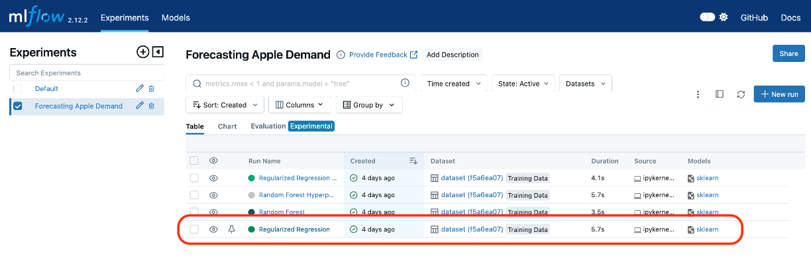
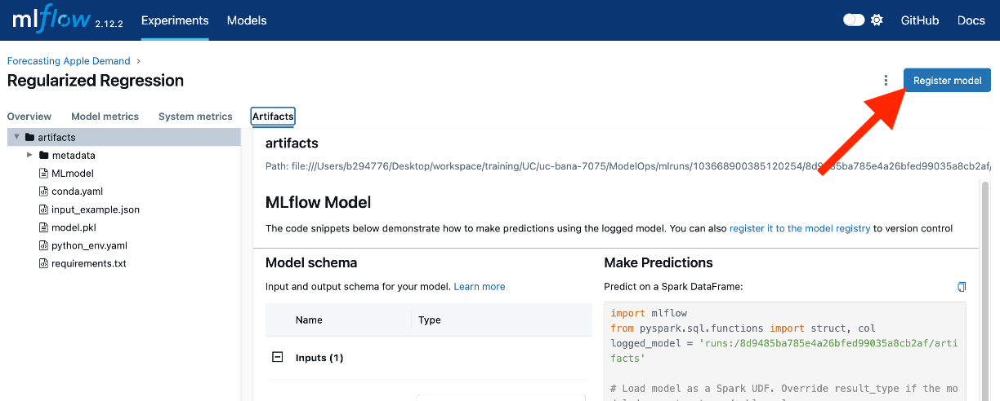
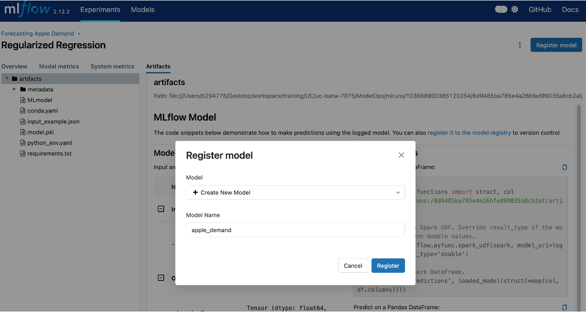
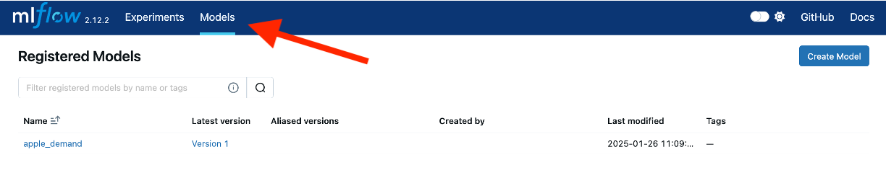
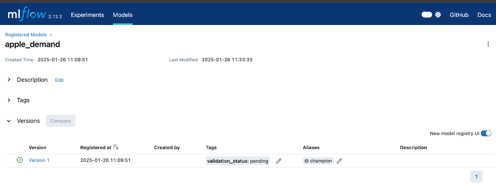
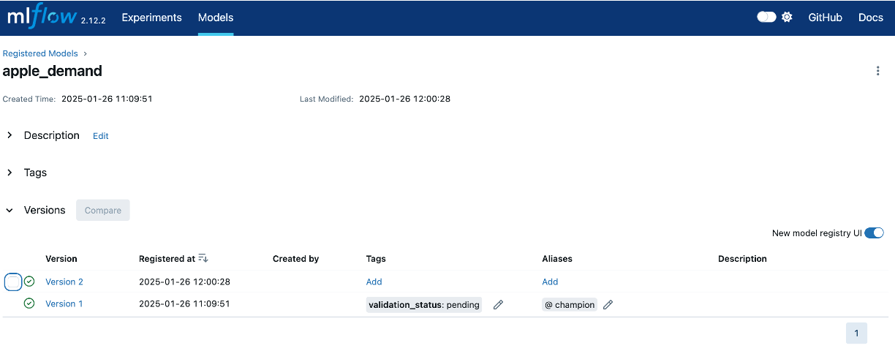
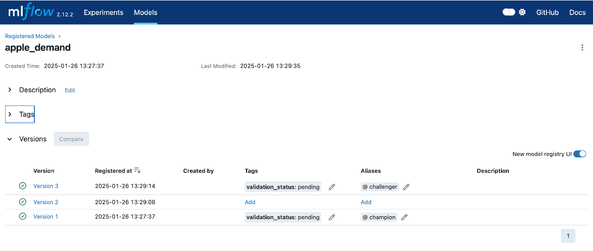
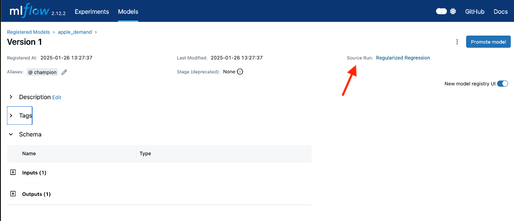

flowchart TB
subgraph Experiment 3
direction BT
m1[Model Run 3.1]
m2[Model Run 3.2]
m3[Model Run 3.3]
end
subgraph Experiment 2
direction BT
m4[Model Run 2.1]
m5[Model Run 2.2]
m6[Model Run 2.3]
end
subgraph Experiment 1
direction BT
m7[Model Run 1.1]
m8[Model Run 1.2]
m9[Model Run 1.3]
end
m8 -- 'Best model' --> v1[Model v1.0]
m4 -- 'Best model' --> v2[Model v1.1]
m3 -- 'Best model' --> v3[Model v1.2]
subgraph Versioned Models
direction BT
v1
v2
v3
end
7 Model Versioning and Reproducibility
As machine learning systems become more integral to business operations, the need for reliable, traceable, and maintainable workflows grows exponentially. Model versioning and reproducibility lie at the heart of achieving this reliability, forming the foundation for robust ModelOps practices. These concepts ensure that teams can iterate on models, track their evolution, and reproduce results across different environments and timelines, even in the face of complex pipelines and evolving data.
In the previous chapter, we explored the importance of experiment tracking, which enables teams to document the evolution of models by logging hyperparameters, datasets, metrics, and results for each experiment. While experiment tracking provides a granular view of individual runs and their outcomes, model versioning builds on this by offering a systematic way to manage and track the lifecycle of fully trained models. Together, these practices ensure that the best-performing models identified during experimentation can be efficiently deployed, monitored, and revisited when necessary.
Model versioning involves systematically managing multiple iterations of machine learning models, capturing changes in architectures, hyperparameters, training data, and evaluation metrics. By maintaining clear records of model versions, teams can track progress, compare performance, and ensure seamless handoffs between development and deployment stages. For example, versioning allows data scientists to confidently deploy the best-performing models identified during the experimentation phase while maintaining the ability to revert to earlier versions if needed.
Reproducibility ensures that experiments and results can be reliably recreated, which complements model versioning by providing consistency across environments. This requires capturing all the components that influence model training, including data versions, preprocessing steps, random seeds, and dependencies. Together, versioning and reproducibility are critical for debugging, auditing, and building trust in machine learning systems. Without them, even minor discrepancies in results can lead to significant challenges in troubleshooting and compliance.
flowchart BT
subgraph r3[Requirements]
direction RL
m1[data]
m2[features]
m3[hyperparameters]
m4[random seeds]
m5[dependencies]
end
subgraph r2[Requirements]
direction LR
m6[data]
m7[features]
m8[hyperparameters]
m9[random seeds]
m10[dependencies]
end
subgraph r1[Requirements]
direction LR
m11[data]
m12[features]
m13[hyperparameters]
m14[random seeds]
m15[dependencies]
end
r1 ---> v1[Model v1.0]
r2 ---> v2[Model v1.1]
r3 ---> v3[Model v1.2]
subgraph Versioned Models
direction BT
v1
v2
v3
end
This chapter builds on the previous chapter to demonstrate how model versioning and reproducibility come to life in a real-world scenario. By integrating the principles of experiment tracking with robust versioning practices, we will illustrate how to maintain a transparent and scalable workflow. By the end of this chapter, you will understand how model versioning and reproducibility complement experiment tracking and learn to implement these practices effectively in your machine learning projects.
7.1 The Need for Model Versioning
In the rapidly evolving field of machine learning, managing models is no small feat. The lifecycle of a machine learning model is iterative, often requiring multiple rounds of experimentation, updates, and deployments. Without a structured approach to versioning, this complexity can lead to challenges in maintaining consistency, ensuring reproducibility, and managing multiple iterations simultaneously deployed across various business processes.
Challenges of Managing Multiple Models
Machine learning systems rarely rely on a single model. Instead, organizations frequently manage multiple models, each tailored to specific use cases, business processes, or datasets. For example, an e-commerce platform may deploy separate models for product recommendations, dynamic pricing, and customer churn prediction. Additionally, even within a single use case, data scientists often iterate on models, creating slightly different versions to test new features, hyperparameters, or datasets.
This proliferation of models introduces several challenges:
Inconsistency
It becomes difficult to ensure consistency in results if the lineage and differences between model versions are unclear.
Operational Complexity
Managing multiple models across environments (e.g., testing, staging, production) can lead to confusion about which model is live or should be retrained.
Deployment Confusion
Organizations may inadvertently deploy outdated or suboptimal models, undermining the business objectives they aim to support.
Real-world examples highlight these challenges. For instance, Booking.com reported in their paper 150 Successful Machine Learning Models: 6 Lessons Learned at Booking.com that the lack of clear versioning early on hindered their scalability and led to inefficiencies in updating and deploying models.
Versioning for Traceability and Consistency
Model versioning is a critical practice that provides traceability throughout the lifecycle of a machine learning model. By versioning models, organizations can:
- Link Experiments to Deployment: Each model deployed to production can be traced back to the specific experiment or set of experiments that informed its development, including the dataset, preprocessing steps, and hyperparameters used.
- Audit Performance: Versioning allows organizations to compare historical performance metrics against current results to determine if changes have introduced regressions or improvements.
- Facilitate Rollbacks: If a newly deployed model underperforms or introduces unintended biases, versioning ensures that the organization can quickly revert to a previous, more reliable version.
Examples of When Model Versioning is Essential
Versioning models is particularly crucial in the following scenarios:
Retraining with Updated Data
When new data becomes available, retraining models often results in improved accuracy. Versioning ensures that stakeholders can differentiate between the original and updated models and evaluate performance gains.
Example: A weather forecasting system regularly retrains models with the latest meteorological data. Versioning ensures traceability between the datasets and the updated predictions.
Hyperparameter Tuning
Small tweaks in hyperparameters can lead to significant performance differences. Versioning ensures that the optimal configuration is clearly documented and reproducible.
Example: A fraud detection system adjusts sensitivity thresholds to minimize false positives. By versioning each iteration, teams can identify the version with the best balance of precision and recall.
Multiple Models for the Same Business Process
Often, organizations deploy multiple models to serve the same process but target different subgroups or geographic regions. Versioning helps manage this complexity.
Example: A recommendation engine deploys region-specific models for North America, Europe, and Asia. Versioning ensures clarity in model assignments and simplifies future updates.
Regulatory and Compliance Requirements
For industries with stringent regulatory requirements, such as finance and healthcare, versioning is essential for audits and compliance.
Example: A credit scoring model must demonstrate consistency with historical performance when audited. Versioning ensures all artifacts, from datasets to hyperparameters, are well-documented and reproducible.
Model versioning builds directly on the principles introduced in the previous chapter on experiment tracking. While experiment tracking captures the journey of a model during development, versioning ensures that this journey remains accessible and reproducible as the model evolves. Together, these practices provide a comprehensive framework for managing machine learning systems.
7.2 Key Components of Model Versioning
Model versioning builds upon the principles and practices of experiment tracking, serving as a bridge between experimentation and production. While experiment tracking documents the various iterations, configurations, and metrics of machine learning experiments, model versioning focuses on systematically capturing, storing, and managing these components to ensure traceability and reproducibility in production environments.
This continuity between experiment tracking and model versioning is essential for creating scalable, maintainable, and reliable machine learning workflows. Below, we revisit some of the key components from experiment tracking and highlight how their roles evolve in the context of model versioning.
Datasets
- Experiment Tracking Context: During experimentation, training datasets are logged to ensure that each experiment run is linked to the specific data used for training and validation. We saw this in Section 6.4 where the training datasets for each experiment run was logged. This helps data scientists analyze the impact of data and feature engineering variations on model performance.
- In Model Versioning: Datasets are versioned alongside models to maintain traceability through deployment and future use. Consequently, if we were to version the best-performing model in the apple demand forecasting example (Section 6.4), the training datasets used for this model would also be stored/linked to ensure that retraining or debugging efforts can recreate the exact conditions under which a versioned/deployed model was developed.
- Why It Matters: This linkage ensures that models can be reproduced and validated under the same data conditions, making it easier to address drift, audit decisions, or meet regulatory requirements.
Hyperparameters
- Experiment Tracking Context: Hyperparameters like learning rates, batch sizes, and optimization strategies are logged to document how they influence model performance.
- In Model Versioning: The hyperparameters for the best-performing model are saved as part of the model metadata, ensuring they can be reused for retraining or deployment. For instance, if a random forest model performs best then its tree depth, number of estimators, splitting criteria, and any other hyperparameters should be preserved as a model is versioned and deployed.
- Why It Matters: Consistent hyperparameter tracking enables reproducibility and helps optimize deployment configurations without re-running unnecessary experiments.
Metrics
- Experiment Tracking Context: Metrics such as RMSE, accuracy, or precision are logged to evaluate and compare model performance across experiments.
- In Model Versioning: Metrics become part of the versioned model’s metadata, serving as critical benchmarks for deployment decisions. For example, if a model is versioned and deployed, then this model is often referred to as a champion model. Future model modifications are often referred to as challengers. In order to compare champion and challenger models, we must continue to have their evaluation metrics stored alongside them so that they can be compared to determine if a challenger model should become the new champion model.
- Why It Matters: Storing metrics alongside model versions ensures that deployment decisions are informed by objective performance comparisons.
Model Artifacts
- Experiment Tracking Context: During experimentation, model artifacts (e.g., weights, configuration files, saved model – .pkl, .pb) are usually logged as we demonstrated in Section 6.4.
- In Model Versioning: The trained model artifacts are also preserved as part of the versioning process. These artifacts represent the operational core of the machine learning workflow and must be reliably stored for deployment and retraining.
- Why It Matters: By versioning artifacts, teams ensure that deployed models can be reloaded, audited, and updated without ambiguity and ensures the exact prediction logic can be reproduced when needed.
Deployment Metadata
- Experiment Tracking Context: During experiment tracking, environment configurations, runtime dependencies, and scaling parameters can be logged but are not always done so.
- In Model Versioning: However, for models that are versioned and intended to be deployed, this information becomes critical to facilitate seamless transitions of the model from development to production. This information often become referred to as deployment metadata or runtime infrastructure.
- Why It Matters: Incorporating deployment metadata ensures that models function as expected in production, regardless of the environment. For example, specifying dependency versions prevents compatibility issues when deploying a forecasting model that relies on Python 3.12 or newer.
Model versioning builds directly on experiment tracking by formalizing the transition from experimentation to operationalization. In our apple demand forecasting example, experiment tracking allowed us to document how different preprocessing techniques and hyperparameter configurations influenced model performance. Model versioning took these records and added structured management of the selected model artifacts, datasets, and deployment settings, ensuring that the model could be deployed reliably and reproduced when needed.
This continuity not only simplifies workflows but also ensures adherence to critical design principles like reproducibility, scalability, and traceability, which are essential for robust machine learning systems.
7.3 Tools for Model Versioning and Reproducibility
In the previous chapter on experiment tracking (Chapter 6), we explored tools like MLflow, Weights & Biases, and Comet.ml, which are pivotal for documenting and tracking experimentation. Building on that foundation, model versioning tools extend these capabilities to ensure the systematic management of trained models, artifacts, datasets, and deployment configurations. Below, we’ll quickly explore tools specifically designed to address the challenges of versioning and reproducibility.
MLflow Model Registry
MLflow’s Model Registry provides a robust solution for managing the lifecycle of machine learning models as part of its broader tracking ecosystem.
- Key Features:
- Central repository for storing, annotating, and managing model versions.
- Track model stages such as staging, production, and archived.
- Compare versions and collaborate using built-in commentary features.
- Use Case in Our Pipeline: After identifying the best-performing apple demand forecasting model, the MLflow Model Registry enables seamless tracking of version updates, fostering reproducibility and transparency in deployment.
- Why It Matters: Centralizing model versioning and metadata enhances collaboration, traceability, and governance across teams.
DVC (Data Version Control)
DVC was introduced in Section 4.3 where we demonstrated its capability to version datasets in a data pipeline. Beyond data, DVC is also a powerful tool for managing machine learning models and their associated artifacts.
- Key Features:
- Version control for datasets, preprocessing scripts, and trained models, enabling end-to-end reproducibility.
- Integrates seamlessly with Git to provide structured versioning for machine learning workflows.
- Supports storage of large files (e.g., models and datasets) in cloud platforms like AWS S3, Google Cloud Storage, or Azure Blob.
- Use Case in Our Pipeline: DVC can be used to version the trained apple forecasting models, ensuring that each iteration is traceable alongside the datasets and preprocessing scripts used in training.
- Why It Matters: By providing a unified approach to versioning data, code, and models, DVC ensures that every component of the ML workflow is reproducible and accessible.
Weights & Biases Model Management
Weights & Biases (W&B), known for its experiment tracking capabilities, also includes features for managing models and artifacts.
- Key Features:
- Integrate model artifact tracking seamlessly with experiment logs.
- Store and compare multiple versions of models alongside datasets and metrics.
- Manage deployment-ready models and track their history across environments.
- Use Case in Our Pipeline: W&B allows us to log and compare various versions of the apple forecasting model, ensuring we retain all metadata and performance metrics for evaluation.
- Why It Matters: Combining experiment tracking and model versioning in one platform simplifies workflows and avoids fragmented systems.
Git-LFS and Git for Models
Git, paired with Git Large File Storage (LFS), is a lightweight option for tracking machine learning artifacts.
- Key Features:
- Tracks changes in code, datasets, and configurations.
- Git-LFS efficiently stores large binary files, such as trained model weights.
- Use Case in Our Pipeline: By leveraging Git-LFS, the apple forecasting model files and associated configurations can be tracked alongside the version-controlled codebase.
- Why It Matters: Using Git for model versioning integrates naturally into existing software development workflows, minimizing the need for additional tools.
TensorFlow Serving
TensorFlow Serving is a specialized system for serving machine learning models in production environments.
- Key Features:
- Native support for versioning TensorFlow models, ensuring smooth updates without interrupting existing services.
- Optimized for high-performance serving of real-time and batch predictions.
- Includes automatic model version management and rollback capabilities.
- Use Case in Our Pipeline: TensorFlow Serving can manage the deployment of multiple apple forecasting model versions, ensuring users seamlessly receive predictions from the best-performing model while enabling rapid updates.
- Why It Matters: TensorFlow Serving excels at operationalizing machine learning models, with built-in versioning and deployment features designed for scalability and reliability.
Neptune.ai
Neptune.ai is a specialized tool designed for tracking, organizing, and managing machine learning models and experiments.
- Key Features:
- Centralized dashboard for tracking model artifacts and metrics.
- Easy-to-use interface for comparing model versions and their configurations.
- Strong integration capabilities with popular ML frameworks like TensorFlow and PyTorch.
- Use Case in Our Pipeline: Neptune.ai can be used to track all iterations of the apple forecasting model and visualize performance metrics over time.
- Why It Matters: Neptune.ai provides advanced comparison and collaboration features, ideal for teams working on diverse ML projects.
BentoML
BentoML is a specialized framework designed to simplify packaging, versioning, and deploying machine learning models.
- Key Features:
- Lightweight framework for packaging and serving models.
- Built-in versioning for models, ensuring that all deployment-ready versions are tracked and reproducible.
- Flexible deployment options for cloud, edge, or on-premise environments.
- Use Case in Our Pipeline: BentoML could be used to package and deploy different versions of the apple forecasting model while ensuring that deployment configurations are version-controlled.
- Why It Matters: BentoML’s focus on versioning deployment-ready models makes it a strong complement to tools like MLflow and DVC.
The choice of tools depends on the specific needs of your team and infrastructure:
- Teams already using MLflow for tracking experiments will benefit from its integrated Model Registry for managing versions.
- For large-scale datasets and models, DVC offers a comprehensive solution that pairs well with Git workflows.
- Organizations looking for deployment-specific tools may prefer BentoML or TensorFlow Serving.
- For advanced dashboarding and visualization, Neptune.ai provides powerful comparison capabilities.
By aligning tools with workflow requirements, teams can establish robust model versioning practices that seamlessly extend the experiment tracking processes outlined in the previous chapter.
7.4 Hands-On Example: Implementing Model Versioning
In the previous chapter, we explored how MLflow can be used to track experiments, documenting essential components like datasets, hyperparameters, and metrics for apple demand forecasting models (see Section 6.4). This experiment tracking provided a solid foundation for organizing and comparing various model iterations. However, tracking experiments is only part of the journey. Once a model is ready to transition from experimentation to production, effective management and versioning become critical.
This section builds on the previous hands-on example by demonstrating how to leverage the MLflow Model Registry to implement model versioning. Model versioning ensures that every model iteration—along with its configuration, artifacts, and performance metrics—is systematically managed. It also facilitates reproducibility, traceability, and seamless lifecycle transitions.
In this hands-on example, we’ll revisit the apple demand forecasting problem and illustrate how to register, manage, and compare multiple model versions using the MLflow Model Registry. By the end of this section, you will understand how to:
- Register models and document their key attributes.
- Manage multiple versions of a model and promote them across lifecycle stages.
- Compare model versions to identify the best-performing iteration.
Through this process, you’ll see how model versioning not only enhances organization and collaboration but also lays the groundwork for deploying reliable models in production. Let’s dive in!
Setting the Stage
Before diving into model versioning, let’s recap where we left off in the previous chapter. In the apple demand forecasting project, we trained and tracked multiple models using MLflow’s experiment tracking capabilities. Each experiment logged essential details, including:
- The dataset used for training.
- Feature engineering steps applied.
- Hyperparameters for the model.
- Evaluation metrics such as mean absolute error (MAE) and root mean squared error (RMSE).
- Artifacts, including the trained model and any visualizations.
Now, we’ll build on that foundation by focusing on versioning these models. The MLflow Model Registry provides a structured way to:
- Register Models: Each trained model can be registered and stored with its corresponding metadata.
- Version Models: Multiple versions of a model can be tracked, allowing you to maintain a history of iterations.
- Facilitate Collaboration: Teams can add notes, tags, aliases, and approval statuses to provide transparency and coordination during the model lifecycle.
If you want to follow along with this example, ensure that you have the following prerequisites set up:
- A working MLflow environment with the MLflow Tracking Server enabled. If you’re using the notebook from the last chapter, it already tracks experiments to a local MLflow server.
- The code and dataset from the apple demand forecasting example. This includes the data preprocessing and modeling pipeline we previously implemented.
- Access to the MLflow Model Registry via the MLflow UI.
If you followed along in Section 6 then you will be all set to follow along in this section!
With these components in place, we’ll demonstrate how to extend the workflow by registering and managing models in the MLflow Model Registry. By the end of this section, you’ll see how model versioning creates a structured and traceable process, ensuring that each model iteration is well-documented and ready for production deployment.
Registering Models
Model registration is a critical step in model versioning and reproducibility. It allows you to systematically manage, track, and deploy models in a structured manner. In this section, we demonstrate two approaches to registering models in MLflow:
- Using the MLflow UI to register a model from a previously logged experiment.
- Using code to programmatically register a model during training.
Method 1: Registering a Model Using the MLflow UI
This method leverages the MLflow user interface to manually register a model from a previously logged experiment.
- Open the MLflow UI:
- Start the MLflow server by running
mlflow uiin your terminal. - Navigate to
http://localhost:5000(or the local URL provided when you runmlflow ui).
- Start the MLflow server by running
- Locate the Experiment:
- In the “Experiments” section, find the experiment you created in the last chapter (e.g., “Apple Demand Forecasting”).
- Select an experiment run, and review the logged parameters, metrics, and artifacts. 
- Register the Model:
- Under the “Artifacts” section, click on the model artifact to open its details.
- Click the Register Model button. 
- Provide a name for the model (e.g.,
apple_demand), and confirm.  - Now, if you navigate to the “Models” tab in the MLflow UI, you’ll see the newly registered model. 
- Adding Metadata::
- Click on the registered model name to see its details.
- We can use the Tags and Aliases features to add metadata about the model. This can be helpful to annotate model versions with their status. For example,
- You could apply a tag
validation_statuswith a valuependingto a model version while it is being validated or going through the final reviews prior to deploying. You can then update the tag value topassedwhen it has passed any additional validation requirements (i.e. smoke tests, performance tests) and is ready for deployment. - And you can use Aliases to provide a flexible way to create named references for particular model versions - such as champion and challenger. 
- You could apply a tag
Why It Matters: Tags and aliases improve model lifecycle management by providing quick, meaningful insights into the status and usage of models. This metadata helps teams identify which versions are in production, under review, or awaiting deployment, ensuring better coordination and traceability.
Method 2: Registering a Model Using Code
For workflows requiring automation, you can register models programmatically within your code. There’s actually a few different ways you can do this.
See this notebook for the entire source code.
The first is to search existing runs in our experiment:
We can then use this info to extract the run we care about and then use mlflow.register_model() to register the model.
Now, if we go back to our UI, we’ll see that we have a new registered model

An alternative, is to register the model during the training run, which helps allow automation within your code. Below is an example of registering an XGBoost model during training:
In the above code snippet, if a registered model with the name doesn’t exist, the method registers a new model and creates Version 1. If a registered model with the name exists, the method creates a new model version.
Also, note how you can even add tags and aliases programmatically!
Now, if we check out the MLFlow UI we’ll see our latest versioned model!

Why Use Both Methods?
Both methods of registering models offer unique benefits, and understanding when to use each can enhance your workflow:
- UI Registration:
- When to Use: This method is ideal for manual workflows or when revisiting past experiments. It allows you to visually explore experiment details, select a specific run, and easily register its model.
- Why It’s Useful: It simplifies navigation and is particularly helpful for users unfamiliar with coding or automation, making it accessible to a broader team of stakeholders.
- Code-Based Registration:
- When to Use: Best suited for automated pipelines where models are frequently trained and registered. It ensures consistency and reduces manual intervention, which is critical for scaling operations.
- Why It’s Useful: This method integrates directly into the experimentation workflow, enabling seamless and error-free registration as part of your end-to-end process.
Combining Both: Teams can benefit from leveraging both approaches. For example: - Use code-based registration for ongoing experiments in an automated workflow. - Use the MLflow UI to manage, review, or reassign stages for registered models, ensuring they meet lifecycle and deployment requirements.
Querying Registered Models
You can even query registered models:
There’s a lot more functionality available with MLFlow Model Registery. To dig more into advanced functionality, check out the MLFlow docs: https://mlflow.org/docs/latest/model-registry.html
Reproducibility of Registered Model
When exploring a specific versioned model in MLflow, you’ll notice a “Source Run” link associated with each registered model version. This link serves as a direct connection to the logged details of the specific run that produced the model, including its hyperparameters, datasets, evaluation metrics, and any other artifacts logged during experimentation. By providing this seamless traceability, the “Source Run” link ensures a clear lineage between the registered model and its training information. This feature is invaluable for understanding the context of a model, diagnosing issues, reproducing results, or auditing the training process, making it an essential aspect of robust model management.

7.5 Summary
In this chapter, we explored the critical role of model versioning and reproducibility within the ModelOps framework, emphasizing their importance for managing the lifecycle of machine learning models. Building on the experiment tracking concepts introduced in the previous chapter, we discussed how model versioning ensures traceability, facilitates collaboration, and supports robust deployment strategies. By versioning models alongside their associated metadata, configurations, and evaluation metrics, organizations can maintain a clear lineage for every model iteration, ensuring consistency and reproducibility across workflows.
We highlighted key components of model versioning, showing how it acts as an extension of experiment tracking, and introduced tools like MLflow, DVC, and TensorFlow Serving, which streamline versioning and foster reliable model management. Through a hands-on example, we demonstrated how to register models using MLflow, both through the user interface and programmatically, showcasing the value of tagging and aliasing for managing model stages and deployment readiness.
Although this chapter focused on the fundamentals of versioning and reproducibility, we laid the foundation for the next chapter, which will delve into deploying and serving machine learning models. With deployment strategies, model lifecycle monitoring, and real-world applications ahead, the concepts explored here will serve as an essential bridge to operationalizing your models in production environments.
7.6 Exercise
In this exercise, you’ll extend your work from the previous chapter’s exercise (see Exercise 6.7) to include model versioning. Building on the California home prediction task, you will use MLflow to register and version your models, enabling clear traceability and management of model iterations.
Part 1: Conceptual Design
- Understanding the Need for Versioning:
- Reflect on the experiment tracking exercise from Section 6.7. Why do you think Zillow would find it important to version the model produced for this task, especially when experimenting with different configurations or when preparing for deployment?
- List scenarios in your California home prediction task where having model versioning would provide benefits, such as:
- Keeping track of retrained models using updated datasets.
- Testing new algorithms or hyperparameters.
- Identifying the best-performing model for deployment.
- Define the Metadata to Track:
- Consider what metadata you would tag your models with (e.g., “validation_status”).
- Think about how aliases could help you manage and reference different model versions, such as labeling one as the “champion” model.
Part 2: Hands-On Experimentation
- Register a Model via the MLflow UI:
- Select the best-performing model from the previous chapter’s exercise in the MLflow UI.
- Register it to the MLflow Model Registry, providing an appropriate name and description.
- Add metadata to the registered model by tagging it with a status like “pending final validation.”
- Assign an alias, such as “champion,” to signify its potential readiness for deployment.
- Programmatically Register a Model:
- Train a new model, such as an XGBoost regressor, using the same California housing dataset.
- Log this new model and register it programmatically in MLflow by following the example provided in this chapter.
- Add metadata and aliases to this model programmatically.
- Explore the Source Run:
- Navigate to the “Source Run” link for one of the registered models in the MLflow UI.
- Observe how it links back to the original run, providing detailed training information.
- Reflect on the importance of this feature for reproducibility and traceability.
Part 3: Reflection on Design Principles
- Versioning and Reproducibility:
- How does the MLflow Model Registry help ensure reproducibility and maintain a clear lineage between model versions and their training runs?
- How could this setup scale to support a team working on the same project?
- Metadata and Management:
- Reflect on how metadata (tags and aliases) simplifies managing multiple model versions in a production workflow.
- Think about potential pitfalls if metadata or aliases are inconsistently applied or not updated.
- Scalability and Collaboration:
- Imagine how this model versioning process could be extended for a team working collaboratively on multiple models. What practices would you recommend for effective collaboration?